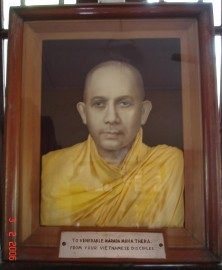

| Trang gốc |
Vietnamese, with Unicode Times font |
|
Hành hương - 2006 Bình Anson -ooOoo-
1. Hành hương Sri Lanka - Phần 1 - Năm nay chúng tôi lên đường đi hành hương, chuyến đi kéo dài 5 tuần lễ, từ ngày 1 tháng 2-2006 đến ngày 4 tháng 3-2006, trong đó có 1 tuần lễ viếng thăm Sri Lanka, 1 tuần lễ tại Thái Lan, và 3 tuần lễ ở Việt Nam. * Thứ Tư, 01-02-2006: Máy bay của Thai Airways rời phi trường Perth lúc 2.00 giờ sáng. Đến Bangkok khoảng 8.00 giờ sáng, phi trường vắng, và thủ tục nhập cảnh rất nhanh. Đặc biệt là ngày nay, du khách không cần phải làm thủ tục khai báo hải quan tại phi trường Donmuang. Đón taxi về nhà, gần chợ Donmuang. Khí hậu ẩm và nóng. Cất hành lý xong xuôi, rảo bộ đến chợ, rồi đến chùa Wat Donmuang. Chánh điện khóa cửa vào buổi trưa. Tôi đến một tháp nhỏ bên cạnh, trong có thờ các tượng Phật nhiều kiểu dáng khác nhau, tượng trưng cho 7 ngày trong tuần, theo truyền thống dân gian Thái. Lễ lạy Phật, rồi chào hỏi vài anh chị Phật tử ở đó. Trở lại chợ, đến quầy bán dây chuyền và đặt bọc các tượng Phật nhỏ mà tôi có mang theo từ Perth. Ông chủ quầy vẫn còn nhớ đến tôi, chào hỏi vui mừng. Khách quen mỗi năm gặp một lần. Tôi để lại các tượng Phật ở đó, hẹn sẽ quay lại vào buổi chiều ... Ghé qua tiệm cafe internet, người chủ tiệm vẫn còn đó, tôi soát và gửi mails đi các nơi, vào thử PalTalk và trò chuyện vài phút với các anh chị bạn đạo trong các rooms Phật giáo. Thứ Năm, 02-02-2006: Dậy sớm, lúc 5 giờ sáng, rảo bước đến một ngõ hẻm bên cạnh nhà, chào hỏi một số Phật tử người Thái, quây quần trước một tiệm tạp hóa nhỏ, đợi chư Tăng đến để cúng dường thức ăn. Thức ăn được để sẵn trong các túi plastic nhỏ, mỗi phần gồm có một túi cơm trắng, một túi cải xào, một túi cà ri, một túi chè ngọt, và một chai nước nhỏ. Chư Tăng ở các chùa gần đó chia nhau đi từng nhóm, mỗi nhóm khoảng 5 vị, đến các ngõ hẻm khác nhau để trì bình khất thực. Sau khi dùng điểm tâm bằng bánh giò cháo quảy và sửa đậu nành nóng, tôi đón xe bus đi vào thành phố Bangkok, viếng thăm chùa Dhammamongkol ở Soi 101 đường Sukhumvit. Đây là một chùa rất lớn, có tượng Phật bằng ngọc thạch xanh biếc và một tháp cao 13 tầng, với tầng trên cùng có tôn thờ xá lợi Phật. Trưa hôm đó, tôi đón sky train đi đến khu thương xá điện tử Panthip Plaza, tìm mua một đĩa cứng 80 Gb để mang theo đến Sri Lanka sao chép dữ liệu, rồi đón xe về nhà. Sau khi ăn tối, tôi đón xe ra phi trường lúc 8 giờ tối, đáp máy bay của hãng hàng không Cathay Pacific đi Sri Lanka. SRI LANKA Thứ Sáu, 03-02-2005: Đến phi trường Bandaranaike lúc nửa đêm. Phi trường nhỏ nhưng ngăn nắp. Nhân viên nhập cư và hải quan thân thiện và làm việc nhanh nhẹn. Tôi được quý Sư Chánh Thân (Indacanda), Sư Tha (Dhammapalo) và Sư Đức Hiền (Guna) đến đón, và giới thiệu người tài xế là ông Vijay, cũng là người hướng dẫn trong chuyến du hành. Xe đưa tôi đến nghỉ tại khách sạn Clarion Kelaniya Hotel, thuộc tỉnh Kiribathgoda, phía bắc thủ đô Colombo. Tôi thức dậy sớm, dùng điểm tâm tại khách sạn. Món ăn gồm có bánh coconut roti dừa, một loại bánh mì có pha cơm dừa, coconut sambal rất cay, và cà ri cá. Tráng miệng với đu đủ và chuối. Vốn đã quen ăn cay và các gia vị nấu cà ri, tôi cảm thấy các thức ăn nầy cũng rất ngon miệng. Ông Vijay đến đón lúc 8 giờ sáng, đưa tôi đến chùa Vinayalankaramaya, nơi Sư Đức Hiền và Sư Tha trú ngụ. Hai vị cũng vừa đến Colombo trong tháng trước, sau khi tốt nghiệp Cử nhân Phật học ở Miến Điện, để tiếp tục chương trình Thạc sĩ. Đây là một chùa nhỏ, trong chánh điện có thờ một tượng Phật thỉnh từ Miến Điện. Tiếp theo, chúng tôi đến chùa Jayawardhanaramaya để gặp Sư Chánh Thân. Rồi đến đón Sư cô Nguyên Hương ở International Meditation Centre (Lanka Vipassana Bhavana Samitiya) để cùng đi tham quan thành phố. Chúng tôi đến Viện Bảo Tàng, nhưng hôm ấy viện đóng cửa. Thẳng tiến đến chùa Gangaramaya, một ngôi chùa lớn và nổi tiếng, trong chánh điện có tượng Phật rất cao, theo kiến trúc của đa số các chùa Sri Lanka. Bên ngoài có thờ hàng trăm tượng Phật, đặt trên nhiều bục, theo kiểu tượng Phật ở Borobudur, Indonesia. Gần chùa là một hồ nước lớn, ở giữa có một hòn đảo nhỏ trên đó là một chùa nhỏ. Chúng tôi đi bộ đến đó, lễ lạy Phật. Bên ngoài trời nắng gắt, bên trong mát lạnh, cảm thấy rất an bình, thư thái. Buổi trưa, chúng tôi đến viếng chùa Vajiraramaya. Đây là nơi ngài Hòa thượng Narada đã từng tu học, về sau là trụ trì và viên tịch tại đó. Ngoài sân chùa có một cội bồ đề rất lớn, nhiều Phật tử ngồi chung quanh, đọc kinh, cầu nguyện. Phía sau là viện bảo tàng Narada, lưu trữ các vật dụng, hình ảnh, tài liệu của Ngài. Bên ngoài là một tượng lớn của Ngài, và chúng tôi có chụp ảnh để kỷ niệm. Bước vào bên trong, chúng tôi thấy những tài liệu in ở Sài Gòn hơn 40 năm trước và nhiều hình ảnh khi Ngài đi hoằng pháp ở Việt Nam. Tất cả vẫn còn đó, nhưng Ngài đã ra đi. Quý Sư Chánh Thân, Sư Tha, Sư Đức Hiền, và tôi đều xúc động khi nghĩ đến công ơn hoằng dương Chánh pháp lớn lao ấy. Chúng tôi rất hoan hỷ khi nhìn thấy tấm ảnh nổi của Ngài mà phía dưới có dòng chữ: "To Venerable Nārada Mahāthera from your Vietnamese Disciples". Được các Phật tử cư sĩ hộ tăng mời ra trai đường ở phía sau, chúng tôi uống nước dừa tươi từ các trái dừa vừa hái ở những cây dừa trồng tại chùa. Đây là nước giải khát rất ngon của xứ Tích Lan, nhất là giữa buổi trưa nóng nực. Sau đó, chúng tôi đến thăm ngài Hòa thượng trụ trì, là một trong những vị đệ tử đầu tiên của Ngài Narada. Ngài Hòa thượng tuy đã gần 90, nhưng trông còn khỏe, minh mẫn, và vui tươi. Khi từ giả ngài, tôi được ngài tụng chúc phúc và cho một sợi dây chỉ Sima trắng để cột vào cườm tay, mà tôi đeo trong suốt cuộc hành trình trong 5 tuần lễ. Đến thăm chùa Nalanda Gedinge và chùa Kelaniyaraja Mahavihara, thuộc tỉnh Kelaniya. Chùa Nalanda tuy nhỏ nhưng có trường Phật học rất lớn. Chúng tôi gặp nhiều vị sa di trẻ đang tu học, một số đến từ Bangladesh, và Miến Điện. Chùa Kelaniyaraja là một chùa lớn nổi tiếng trong vùng, trên một khuôn viên rất rộng, nhìn xuống sông lớn chảy về thành phố. Chùa còn lưu nhũng bia đá cổ, có khắc các bài kinh. Bên cạnh chánh điện có tháp lớn, màu trắng, vòm cong, tiêu biểu cho các tháp thường thấy tại Sri Lanka. Tiếp theo, chúng tôi đến viếng trường Phật Pháp Maitri (Maitri Dhamma School). Đây là một trường mới thành lập để dạy giáo lý bằng Anh ngữ cho các em Phật tử. Có nhiều lớp giáo lý vào cuối tuần, và vị hiệu trưởng cho biết hiện có hơn 200 em đang theo học. Chúng tôi rất hoan hỷ được nghe các em tụng các bài kinh căn bản bằng tiếng Pali, trình bày về các hoạt động của trường bằng tiếng Anh, và chúng tôi có trả lời một số câu hỏi do các em nêu ra, liên quan đến các hoạt động Phật giáo tại Úc. Thứ Bảy, 04-02-2005: Ông Vijay đến khách sạn lúc 6.30 sáng. Chúng tôi đến rước Sư Tha và Sư Đức Hiền để cùng đi hành hương. Theo dòng lịch sử, đạo Phật tại quốc gia nầy phát triển qua nhiều thời kỳ với những kinh đô khác nhau: đầu tiên là Anuradhapura, rồi đến Polonnaruwa, Kandy, và Colombo. Chuyến hành hương đi ngược thời gian, thăm các vùng đó theo thứ tự ngược lại: Colombo - Kandy - Polonnaruwa - Anuradhapura. Ăn điểm tâm tại một quán ven đường, theo kiểu tự chọn (self service). Thức ăn rất tiêu biểu của người Tích Lan, gồm: bún, bánh cống bằng gạo lức, bánh mì roti có cơm dừa, đậu nấu cari, và bánh samosa - một loại bánh xếp chiên dòn với nhân đậu. Thức uống gồm có nước cam, nước dừa, cà phê hoặc trà sữa. Ghé vào Pinnawala, nơi nuôi cả đoàn voi hơn 100 con, lớn bé đủ loại. Đúng vào giờ tắm, đàn voi được lùa đi đến con sông gần đó. Nhìn đàn voi đùa giỡn trong nước, mặt các chú voi trông rất vui và hỷ lạc. Chúng tôi đến Kandy vào giữa trưa, trời mưa tầm tả. Kandy là cố đô của Sri Lanka, và cũng là một thành phố lớn. Vào ngày cuối tuần, người dân Tích Lan đến hành hương rất đông, rất khó tìm chỗ đậu xe. Sau khi ăn trưa, chúng tôi đi bộ đến chùa thờ Răng Phật (Tooth Relic Temple). Dù trời mưa lớn, khách hành hương vẫn kiên nhẫn đứng xếp hàng để đợi vào chùa. Không đúng dịp mở cửa để chiêm bái Răng Phật, chúng tôi chỉ lễ lạy và dâng hoa trước cửa phòng, rồi đi nhiễu chung quanh. Tiến đến trụ sở Hội Xuất Bản Phật Giáo (Buddhist Publication Society), là nơi chúng tôi gửi đóng tiền hằng năm để nhận kinh sách Anh ngữ đều đặn trong 30 năm qua. Trời mưa xối xả. Văn phòng lại đóng cửa vào cuối tuần nên chỉ gặp được một vị sư người Mỹ, trong ban biên tập của Hội. Xe tiếp tục đến tỉnh Dambulla. Chúng tôi đến chùa Aluvihara trên núi. Đây là một di tích lịch sử quan trọng của Phật Giáo, là nơi kết tập kinh điển lần thứ IV, đó là lần đầu tiên được viết xuống giấy bằng lá bối. Chúng tôi vào lễ bái các hang động, bên trong có thờ các tượng Phật, lòng tưởng nhớ và ghi ân công đức các bậc Trưởng lão ngày xưa, hơn 2,000 năm trước, đã có công gìn giữ và viết lại toàn bộ Tam Tạng kinh điển. Bên cạnh đó là một viện bảo tàng đã xây dựng hơn 50 năm trước, trong có ảnh của quốc vương xứ Campuchia đến dự lễ khánh thành. Trong đó, có trưng bày các loại lá bối và tiến trình phơi khô các lá, và cách ghi khắc kinh điển trên lá. Viếng thăm chùa Phật Vàng (Golden Buddha Temple). Đây là một chùa mới xây dựng, có một tượng Phật sơn màu vàng, rất vĩ đại. Phía dưới là nhà triển lảm, phòng hội nghị, và có cả phòng Internet. Tôi vào đó gửi vội vài thông tin, báo về gia đình ở Úc và người nhà ở Sài Gòn. Đoàn hành hương nghỉ đêm tại khách sạn Anon Rest, Matale Road, Dambulla. Khách sạn còn mới, phòng ốc và dịch vụ rất tốt. Chủ Nhật, 05-02-2005: Sau khi ăn sáng, chúng tôi đến viếng chùa Dambulla trên núi đá (Dambulla Rock Temple). Có năm hang động được người xưa biến đổi thành chánh điện thờ Phật, trên vách và trên trần còn các nét vẽ xưa cổ. Trong một hang lớn, ngay giữa hang có để một chậu lớn, hứng nước nhỏ giọt từ trên trần. Được biết là nguồn nước nầy nhỏ giọt quanh năm, không bao giờ cạn trong cả ngàn năm qua. Bên ngoài có đàn khỉ chạy nhảy trên bờ tường, cành cây, rất vui. Chúng tôi đến cung điện Sigiriya, được xây dựng khoảng 1,500 năm trước, trên một núi đá cao khoảng 200 mét, đã được tổ chức Unesco công nhận là một kỳ quan trên thế giới. Đường lên đỉnh núi, qua các bậc thang đẽo trên vách đá, rất khó khăn và chật hẹp. Thật khâm phục người xưa về công trình nầy, đã di chuyển những tảng đá lớn để xây dựng một tòa lâu đài bề thế trên đỉnh núi. Ăn trưa xong, chúng tôi đi đến thành phố Polonnaruwa. Trên đường đi, chúng tôi dừng lại tại hồ Girithale, chiêm bái một tượng Phật tư thế đứng, cao lớn, có lẽ mới thiết lập trong thời gian gần đây. Polonnaruwa là kinh đô cổ của Sri Lanka, khoảng 1,000 năm trước. Trong thành phố có hồ nước Parakrama Samudraye, rất lớn, được xây dựng trong thế kỷ thứ 10, để chứa nước tưới tiêu. Chúng tôi đến viếng di tích các chùa xưa, đặc biệt là chánh điện Gal Vihara. Nơi đây có ba tượng Phật rất to, được tạc ra từ núi đá: với tư thế đứng, ngồi thiền, và bát niết bàn. Hình ảnh tượng Phật trong tư thế ngồi đã khắc sâu trong tâm trí tôi từ lâu, khi tôi nhìn thấy qua các ảnh trên Internet. Giờ đây mới được chiêm bái rõ ràng, thật là đại phước duyên! Tối hôm đó, chúng tôi đến ở một nhà khách nhỏ trong thành phố. Vợ chồng chủ nhà rất vui tính, hiền lành. Phòng ngủ nhỏ nhưng có máy điều hòa, và ở phòng khách có máy vi tính nối mạng Internet. Máy dùng modem, truy cập rất chậm, nhưng cũng đủ để soát và gửi mails. Gần đó là một tiệm ăn nhỏ, tôi cùng ông Vijay đến ăn tối, thưởng thức món cá lăn bột chiên dòn. Đa số cá ở Sri Lanka là bắt từ các hồ nước ngọt, nên ăn rất ngon. Thứ Hai, 06-02-2005: Rời Polonnaruwa khoảng 7 giờ sáng, chúng tôi tiếp tục lên đường. Ăn sáng tại một quán nhỏ ven đường, với thức ăn quen thuộc của người Tích Lan. Người Tích Lan ăn uống đơn giản, không cầu kỳ. Nếu ta quen ăn ớt và các gia vị cay nồng thì vẫn thưởng thức được. Người nào chỉ thích ăn rau đậu thì vẫn chọn được các thức ăn không thịt cá. Hơn nữa, do ảnh hưởng Âu châu, bánh mì và các loại bánh ngọt có bán tại nhiều nơi. Trái cây rất ngon, thuộc miền nhiệt đới, như dừa, chuối, dứa, xoài, đu đủ, dưa hấu, lôm chôm ... Hải sản thì có cá, tôm, mực, v.v. Thịt heo, gà, bò đều có đầy đủ. Chúng tôi đến chiêm bái tượng Phật đứng, khắc trong núi, ở Avukana, cao 15 mét, điêu khắc trong thế kỷ thứ 5, tức khoảng 1,500 năm trước. Gần đó, có một chùa nhỏ và một lớp học ngoài trời. Hôm đó là giờ học Anh văn do vị trụ trì dạy cho một số Phật tử. Biết chúng tôi là khách hành hương, Sư mời ở lại dùng cơm trưa, nhưng chúng tôi từ chối vì còn phải tiếp tục lên đường. Nói chung, người dân Sri Lanka rất hiếu khách, nhất là khi biết đoàn hành hương có tu sĩ và cư sĩ Phật giáo. Đến Anuradhapura và dùng cơm trưa tại đó. Đây là kinh đô có trước triều đại Polonnaruwa, kéo dài 1,400 năm từ thế kỷ IV trước Tây lịch đến thế kỷ X sau Tây Lịch, và được xem như là thánh địa của Phật giáo Tích Lan. Để bảo vệ an ninh chống khủng bố, khu thánh địa được canh gác rất chặt chẻ. Xe phải đậu chỗ xa, rồi đi bộ vào, qua các cổng rà soát thân thể và túi xách mang theo, v.v. Chúng tôi tham bái 11 di tích: - Sri Mahabodhiya: Nơi nầy có cây bồ đề do Tỳ khưu ni Sanghamitta mang đến trông tại đảo quốc Sri Lanka. Cây bồ đề được chiết từ cây bồ đề ở Bodh Gaya, là nơi Đức Phật thành đạo. Tỳ khưu ni Sanghamitta là em gái của ngài Tỳ khưu Mahinda, là người lãnh đạo đoàn truyền giáo, mang đạo Phật truyền sang đảo quốc vào thế kỷ thứ 2 trước Tây Lịch. Cây bồ đề vẫn còn tồn tại cho đến ngày nay, và người Tích Lan rất sùng bái cội cổ thụ nầy. Họ không cắt nhánh hay tỉa cành, để cây mọc tự nhiên, và dùng những cột sắt để chống đỡ. Khi nhánh cây bị gió thổi gảy rụng xuống, họ nhặt mang về để thờ. Khách hành hương gửi giày dép ngoài cổng, đi chân đất vào trong khuôn viên. Đây là phong tục chung cho tất cả các nơi chúng tôi viếng thăm, để tỏ lòng tôn kính. Tôi vào chánh điện gần cây bồ đề, lễ Phật, rồi ngồi hành thiền, không gian yên tĩnh, gió thổi nhẹ nhàng, mát mẻ, vô cùng hoan hỷ. - Lovamahapaya: Đây là một đại giảng đường vào thế kỷ II trước Tây Lịch, có chiều dài hơn 100 mét. Ngày nay chỉ còn lại các cột đá, gồm có 40 hàng, mỗi hàng có 40 cột, tổng cộng là 1,600 cột đá. - Tháp Ruvanvelisaya: xây dựng vào thế kỷ II trước Tây Lịch, đã được trùng khoảng 50 năm trước, màu trắng, nổi bật trong vùng thánh địa. Tường thành chung quanh tháp có khắc hình voi, mỗi bề 475 tượng, tổng cộng là 1900 tượng. - Tháp Thuparamaya: Đây là tháp đầu tiên sau khi Ngài Mahinda đến truyền đạo, đã được tái tạo qua nhiều thời kỳ. Hiện nay, tháp có đường kính khoảng 20 mét, chiều cao khoảng 4 mét. Ngôi chánh điện cũ đã bị thiêu rụi, chỉ còn lại các cột đá. - Tháp Jetavanarama: Đây là là tháp lớn nhất của Sri Lanka, xây dựng vào thế kỷ III. Tháp có chiều cao khoảng 100 mét, đường kính khoảng 200 mét. Lớp đất bao phủ tháp đang được bốc dỡ, trùng tu, và sẽ được tô lên một lớp xi măng, rồi sơn trắng, như các tháp khác. - Tháp Abhayagiri: Gần đó là chùa Abhayagiri (Vô Úy Sơn), là một trong hai tông phái chính trong đầu thế kỷ thứ 2 (tông phái kia là Mahavihara - Đại Tự Viện). Tháp cao khoảng 70 mét, đường kính 100 mét. - Tháp Lankaramaya: Tháp nhỏ, chiều cao khoảng 4 mét, đường kính 15 mét. Chung quanh tháp còn sót lại các cột đá, di tích của một dảy nhà bao tròn chung quanh tháp. - Tháp Mirisavetiya: Đây cũng là một tháp lớn, thành lập vào khoảng thế kỷ thứ 1 trước Tây Lịch. Đã được trùng tu và sơn màu trắng. - Tượng Samadhi Buddha (Đức Phật tham thiền): Trong vườn Mahamevuna. Tượng có chiều cao khoảng 3 mét, trong tư thế Đức Phật ngồi tham thiền, được xem là một trong các tượng Phật đẹp nhất của Sri Lanka. - Chùa Isurumuniya: Chùa xây trong hốc đá khoảng thế kỷ V, kế cạnh là hai hòn đá rất lớn, bên trên là một tháp nhỏ. Kề bên là một hồ nước có khắc nhiều hình voi. - Kuttam Pokuna (Twin Ponds - Hồ Đôi): Gần tháp Abhayagiri, chiều dài khoảng 45 mét và chiều ngang khoảng 20 mét. Bờ hồ các các tảng đá hoa cương với những hoa văn rất mỹ thuật. Vùng thánh địa Anuradhapura có nhiều khách sạn, nhà trọ, quán ăn để phục vụ khác hành hương. Chúng tôi nghỉ tại nhà khách Ceybank Rest. Một điểm đáng ghi nhận như ông Vijay cho biết, là trong vùng nầy, theo lệnh của chính phủ, không có nơi nào được phép bán rượu hay rượu bia. Thứ Ba, 07-02-2006: Lên đường trở về Colombo. Trên đường đi, ghé vào ăn sáng tại một thị trấn nhỏ. Một Phật tử Sri Lanka tiến đến chào hỏi. Trong khi trò chuyện, khi biết chúng tôi là người Việt, ông ta khoe rằng ông có một người con trai đã từng đại diện Sri Lanka đến Việt Nam để thi đấu thể thao. Dọc đường, ghé vào quầy trái cây, mua lôm chôm, vỏ màu đỏ tươi, to như trái táo, rất ngon. Chúng tôi đến viếng chùa Kalutara, phía nam thủ đô Colombo, bên cạnh sông Kalu. Đây là một chùa lớn, với bảo tháp rất to, bên trong có thờ nhiều tượng Phật và có tôn trí xá lợi Phật. Đặc biệt bên lề đường, cạnh chùa, có để các thùng công đức, để các tài xế có thể dừng xe lại, cúng tiền vào thùng, chấp tay vái lạy rồi tiếp tục ra đi, không cần phải đi vào chùa. Bên kia đường là cây cổ thụ bồ đề Kalutara rất nổi tiếng, với cành lá xum xuê, che phủ cả mặt đường, và người ta phải dùng những trụ sắt để chống đỡ các nhánh cây lớn. Rất đông Phật tử đến lễ lạy và cầu nguyện chung quanh cây bồ đề, đi nhiễu vòng quanh, và múc nước tưới cây như là một cử chỉ hùn phước, góp phần bảo quản cây cho được tươi tốt. Vùng nầy cũng là quê của ông Vijay, và ông ấy có giới thiệu vợ, và gia đình ông. Chúng tôi nghỉ đêm tại khách sạn Garden Beach. Tôi vào hồ bơi của khách sạn để thư dãn sau nhiều ngày đi đường mệt nhọc. Tối hôm đó, chúng tôi đi bộ ra bờ biển hóng gió mát, và trò chuyện với gia đình ông Vijay. Thứ Tư, 08-02-2006: Lên xe đi dọc bờ biển về phía nam đảo quốc, thăm viếng các nơi bị sóng thần tsunami tàn phá trong hai năm trước. Đến thăm các nơi đã được các cộng đồng Phật giáo trên thế giới tài trợ tái thiết. Các khu nhà mới đều có kiến trúc giống nhau, ngoài cửa có gắn một bảng nhỏ ghi tên tổ chức tài trợ. Chúng tôi viếng hai chùa lớn trong vùng. Dấu mực nước của cơn sóng thần vẫn còn in rõ trên tường, cao hơn đầu người. Một điều lạ lùng là tuy nhà cửa bị tàn phá, các tượng Phật trong chùa cũng như ngoài trời đều nguyên vẹn. Chúng tôi viếng thành phố Gale ven biển, có pháo đài xưa, và cũng bị sóng thần tàn phá. Ông Vijay chỉ cho thấy công viên tình yêu (Love Park) ven biển, nơi tâm sự của các cặp tình nhân trẻ. Vào ngày thứ bảy, đây là nơi hẹn hò lý tưởng, và khi sóng thần tràn đến, đã lôi cuốn đi rất nhiều cặp tình nhân ấy. Một sự kiện rất buồn, và cũng đáng để suy gẫm về sự vô thường và bất định của cuộc sống. Chúng tôi quay về Colombo. Một điểm đặc biệt của nước Sri Lanka là có rất nhiều tượng Phật tôn trí ven đường. Tại các ngã tư với vòng xoay, thường thấy trồng cây bồ đề và một chùa nhỏ, hay một tượng Phật để dân chúng đến lễ bái. Trở về vào giờ cao điểm buổi chiều, xe cộ rất nhiều, đủ loại xe hơi và xe gắn máy, nhất là các loại xe Nhật và Trung quốc. Loại xe taxi ở Sri Lanka chỉ toàn là loại xe ba bánh (three-wheelers). Có nhiều xe buýt công cộng, chật ních người. Sau khi đưa Sư Tha và Sư Đức Hiền về chùa, tôi về nghỉ đêm tại khách sạn Sarasa trong vùng Kelaniya, gần tiệm giày Bata của ông Vijay. Thứ Năm, 09-02-2005: Đến rước Sư Tha và Sư Đức Hiền để cùng đến gặp Sư Chánh Thân. Sư Chánh Thân đưa tôi đến lễ lạy ngài Hòa thượng trụ trì và các vị Trưởng lão trong chùa. Đến rước Sư cô Nguyên Hương, rồi cùng đi thăm hai nhà sách Phật giáo: Narada Book Center và Buddhist Book Center. Mua vài quyển sách Anh ngữ và tình cờ mua được một băng cassette, thu âm một bài giảng của Hòa thượng Narada 30 năm trước. Sau khi ăn trưa tại một nhà hàng Tàu, chúng tôi đến viếng quảng trường Độc Lập (Independent Square), phía sau là một nhà lớn, xây theo mô hình giảng đường Lovamahapaya ở Anuradhapura. Đi vào khu trung tâm thành phố, rồi đến thăm bờ biển, dọc theo đường Galle Face Drive, nhìn ra Ấn Độ Dương. Sau đó, ông Vijay đưa chúng tôi đến viếng chùa Devrara Vihara. Đây là một chùa mới, trong một khuôn viên rộng lớn. Chùa đang có một dự án cho khắc toàn bộ Tam Tạng trên đá mài đen bóng, mỗi bia đá cao 2.5 mét. Sư trụ trì đưa chúng tôi lên lầu, lễ lại xá lợi Phật. Tôi cũng được ngài đọc kinh chúc phúc, tặng cho một sợi chỉ vàng để đeo nơi cườm tay, và một món quà quý gồm có tượng Phật, tháp nhỏ, cây bồ đề đặt trên một khay kim loại nhỏ. Ông Vijay đưa tôi về tiệm giày của ông, ăn tối, và nghỉ ngơi. Đến 10 giờ đêm, chúng tôi đến chùa Jayawardhana để rước quý Sư để cùng đi ra phi trường. Tôi rất cảm động về lòng thương mến của quý Sư, đã chăm lo chu đáo cho tôi trong suốt cuộc hành trình ở Sri Lanka. Phi cơ của hãng Cathay Pacific cất cánh lúc 3 giờ sáng, rời Colombo bay đi Bangkok. -ooOoo- Xem tiếp: Phần 2: Việt Nam | Hình ảnh Hành hương
-ooOoo- Xem tiếp: Phần 2: Việt Nam | Hình ảnh Hành hương Ghi chú:
[Trở
về trang Thư Mục] |